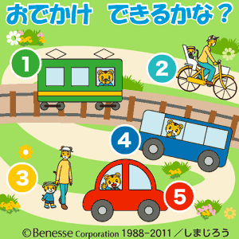

<!-- main -->
<div id="main">

<div id="kyouzai">

<div class="block">
<h3>おでかけ できるかな？</h3>
<br />
<p>お出かけの時の公共の場所でどう振る舞えばいいかしまじろうと一緒にシミュレーションできるから、実際のおでかけがスムーズになります。【Flash&nbsp;150KB】</p>
</div><!-- /.block -->


<div class="block">
<p class="play">■使い方<br/>
ボタンをタップして、次の画面に進んでください。</p>
<p class="tx_gray">※音声つきです｡マナーモードを解除してお使いください｡</p>
</div><!-- /.block -->
<a href="src/petit_1108_1_android.swf" data-role="button" data-theme="e" rel="external">スタート</a>
<br />

</div><!-- /#kyouzai -->

</div><!-- /#main -->
